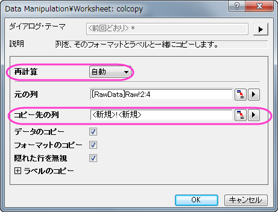

データフィルタを使用してグラフをダイナミックに比較する
Dynamic-Graphs-Changing-Filters
サマリー
列をコピー...機能は1つのワークシートから他のワークシートへ2つのワークシート間のリンクは維持して列をコピーします。この機能を利用すると、1つの列に対してワークシートを準備した数だけのフィルタ条件を設定できます。例えば、列Gas Typeに2つのフィルタ条件をそれぞれのワークシートType1 とType2に設定し、それはワークシートRawにリンクしています。
また、他にもさまざまな機能を利用してダイナミックグラフを作成でき、それらはリアルタイムに変更されるフィルタ条件を反映して更新することが出来ます。これらの概念を説明している動画はこちらから確認してください。https://www.youtube.com/watch?v=N0Pud-91qCM
必要なOriginのバージョン: Origin 2015 SR0以降
学習する項目
このチュートリアルでは、以下の項目について解説します:
- 異なるフィルタ条件により異なるデータをダイナミックに比較
- 1つの列に異なるワークシートを使用して複数の条件をつける
- ダイナミックフィルタラベルをグラフに追加し、フィルタ条件により更新するように設定する
ステップ
このチュートリアルは、チュートリアルデータプロジェクト（<Origin EXE Folder>\Samples\TutorialData.opj）と関連しています。
ワークシートの設定
チュートリアルデータを開き、プロジェクトエクスプローラでCompare Graphs with Filters Dataのフォルダを開いて、ワークブックBook1をアクティブにします。ワークシートRawには、複数年にわたる温室効果ガスの排出量を計測したデータが格納されています。
- 最後の3列(Year, Gas Type, Value)を選択します。
- 1つの列の上で右クリックを行い、コンテキストメニューで列をコピー...を選択します。(見当たらないときはメニューの最後にある下向き矢印をクリックしてください。)
- ワークシート：列のコピー:colcoly ダイアログで再計算で自動を選択して、新しく入力したデータに自動的に更新されるように設定します。また、コピー先の列が<新規>!<新規>（新しいワークシートを意味します）に設定されていることを確認し、OKをクリックします。

- 新しいワークシートをType1とします。
- 同じ操作を繰り返し、2番目のワークシートをType2とします。
フィルタのセット
- シートRaw では列Countryを選択してフィルタボタンをクリックします。
- クリックすると列Countryの左上にろうと型のアイコンが作成されます。クリックするとメニューが開きます。全て選択のチェックをはずしてFranceにチェックをつけます。OKをクリックします。
- これで、ワークシートはフランスの情報のみを表示します。
- ワークシートType1 の列Gas Typeにフィルタを設定し、HFCsという気体を選びます。ワークシートRaw とType1 はリンクしているため、このワークシートはフランスのHFC排出量のみを表示します。
- ワークシートType2 では列Gas TypeでフィルタをかけてPFCsのみを表示します。このワークシートはフランスのPFC排出量のみを表示します。
グラフを作成して線形フィットを追加する
- ワークシートで何も選択していない状態で、作図：複数区分/軸：積み上げグラフと操作します。
- 開いたダイアログで入力の右側にある三角形のボタンをクリックして列を選択...を選びます。
- データセットブラウザダイアログで、リストデータセット = 現在のブックであることを確認し、Type1とType2のValue列を選択します。追加を押してからOKをクリックします。
- 積上げ:plotstackダイアログボックスでプロットタイプを散布図に設定します。結果は、次のようなグラフになります。

- 新たに作成されたグラフの中の、どの軸でもかまわないのでダブルクリックを行い、スケールタブの再スケールを自動に設定します。この操作を両方のプロットの全ての軸に対して行います。これでワークシートフィルタが変更されてデータが変わっても、軸は自動的に際スケールされます。
Note:なお、Ctrlキーを押しながら水平と垂直のアイコンを選択して同じレイヤのX軸とY軸の再スケールを一度に編集することもできます。ダイアログボックス下のドロップダウンリストで変更を両方のレイヤに適用します。(例: レイヤ1とレイヤ2)
- レイヤドロップダウンをレイヤ1に設定し、目盛ラベルをクリックします。下アイコンが選択されていることを確認して、年度のみ表示されるように表示を変更します。
- 軸と軸目盛タブを開きます。右アイコンを選択して、主目盛と副目盛をなしにします。
- レイヤドロップダウンリストでレイヤ2の上X軸と右Y軸で繰り返してから、OKをクリックします。
- 2つあるY軸のタイトルをどちらも削除します。新しいテキストラベルとしてValueを追加し、90度回転させます(右クリックで表示されるオブジェクトの表示属性で回転させる度数を選択)。これを新しいY軸のタイトルとします。
- 次に、線形フィットを行い、温暖化ガスの排出を分かりやすくします。
- グラフをアクティブにして、解析：フィット：線形フィットを選択します。
- 再計算 を 自動にセットします。
- 入力ボックスの右側にある三角形をクリックして現在のページの全てのプロットを追加するを選択します。OK をクリックして、線形フィットを実行します。
- 線形フィットをした直線をダブルクリックして作図の詳細ダイアログを開きます。グラフの線タブを開き、それぞれの線の色を赤に設定します。凡例オブジェクトを削除し、レポート表を移動します。グラフは、次のようになります。

ダイナミックに変化するラベルを追加する
- フィルタをかけたワークシートType1のラベルを選択します。
- メニューで編集：コピー：コピーと操作します。
- テキストツールを選択してグラフまたはワークシートをクリックします。小さい青いテキストボックスが表示されたらCtrl + Alt + Vを押します。これでデータフィルタのラベルをテキストボックスに貼り付けます。
- 貼り付けたテキストを選択し、右クリックをしてからオブジェクトのプログラム制御を選択します。
- オブジェクトのプログラム制御ダイアログでリアルタイムにチェックをつけ、OKをクリックすると、データフィルタが変わるごとに内容が変更するようにします。
- 同じように、ワークシートType2とワークシートRawのフィルタラベルも設定します。"PFC"と "HFC"の前にそれぞれ"Gas Type" と入力し、"France"というラベルの前には"Country"と入力します。さらに、テキストツールでタイトルを追加します。

ワークシートにフローティンググラフを追加する
- ワークシートにグラフを追加するには、ワークシートRawをアクティブにします。
- ワークシートの灰色部分で右クリックを行い、コンテキストメニューでグラフ追加を選択します。
- グラフブラウザダイアログが開きます。そこで先ほど作成したグラフを選択してOKをクリックします。
-
グラフを拡大するには、グラフの端をつかみ、ドラッグすると大きくなります。この時点で、ワークシートのフィルタを変更すると、グラフはその内容に更新されます。(更新されない場合は、錠前アイコンが緑(再計算：自動)に設定されていることを確認してください。)